Kelebek Vadisi Yer Altı Şehri (Dikey Yer Altı Şehri)
Hisarcık – Erciyes Dağı yolu üzerinde Kelebek Vadisi’nin dik yamacında yer alan bu eşsiz yapıyı mutlaka görmelisiniz. Sarp kayalar arasından geçilerek varılan tünel girişinin ardından şehir sizi geniş bir mekan ile karşılıyor. Bu geniş mekanın ortasında bir kolon yer alıyor. Bu katın üstünde bir kat daha yer alıyor ve sanırım geçmişte mutfak olarak kullanılmış (pişmiş toprak parçaları buldum).
İşin macera dolu kısmı ise alt katlarda yer alıyor. Yapı merdivenler ile 4 kat daha aşağıya iniyor. -1. katta ise düzgün kesimli taşlarla örülmüş duvarlar yer alıyor, ayrıca yine bu katta merkezi bir koridora açılan 5 oda yer alıyor. -4. kattan sonra ise -54 metreye inen bir tünel yer alıyor. Merdivenli bir biçimde oyulmuş olan tünelin sonuna kadar gittik fakat sonu kapalı görünüyor, hesaplarımıza göre tünelin sonunun vadi tabanında akan akarsuya erişmesi gerekiyor. Yapılacak kısa bir çalışma ile tünelin sonu aslında çok rahat açılabilir.
Yetkililere buradan çağrı yapıyoruz, bu bölgeyi bir an önce sit alanı edip koruma altına almanız gerekiyor. Bu eşsiz dikey yer altı şehri belki de türünün tek örneğidir.
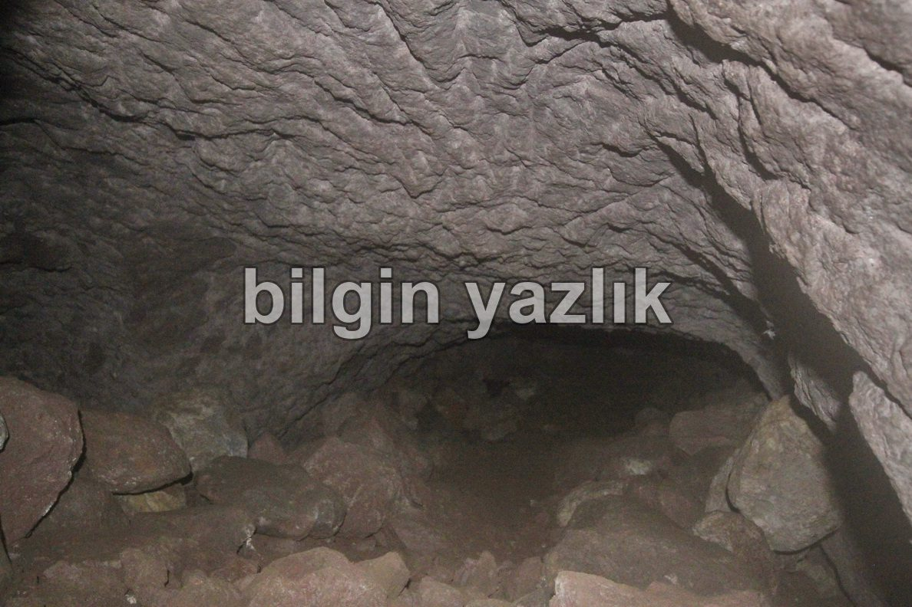
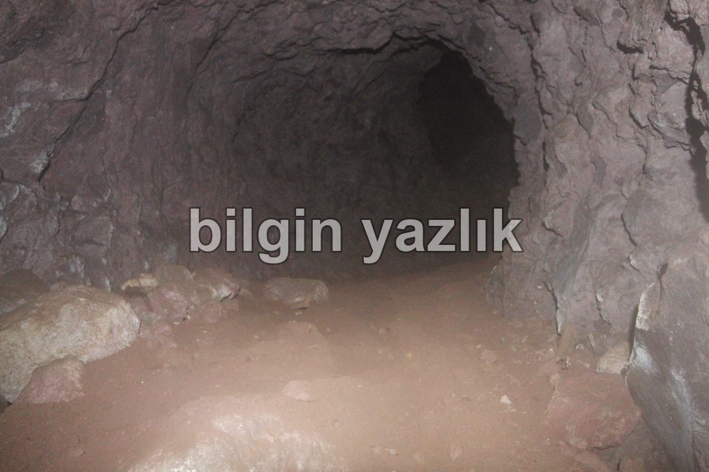
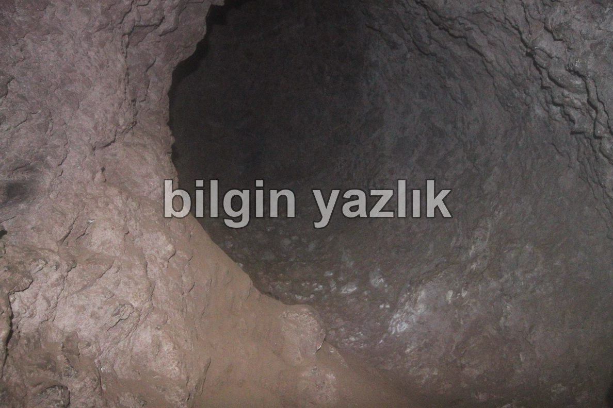
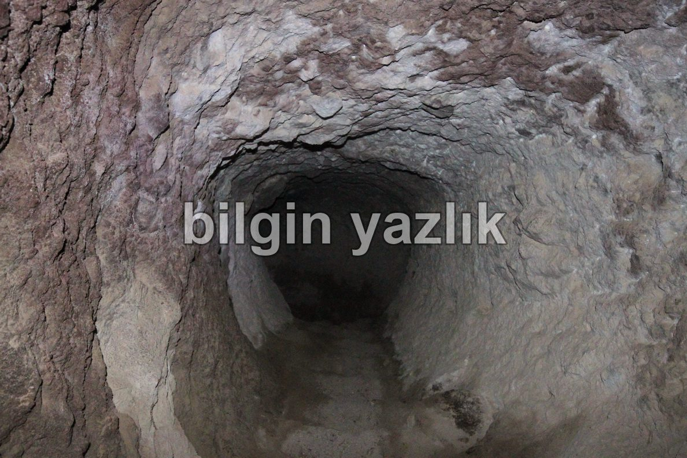
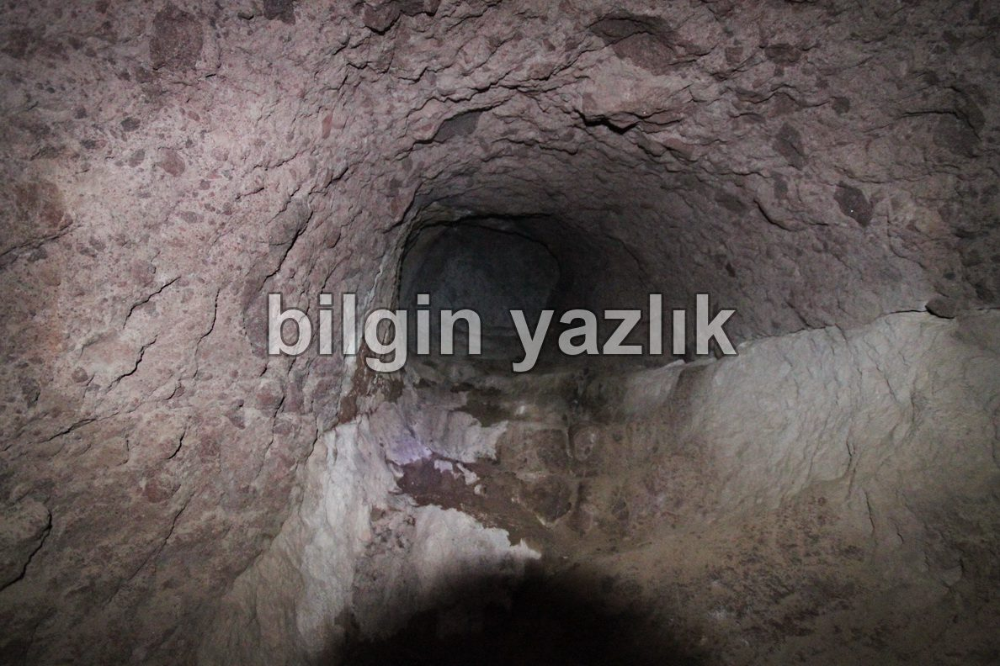
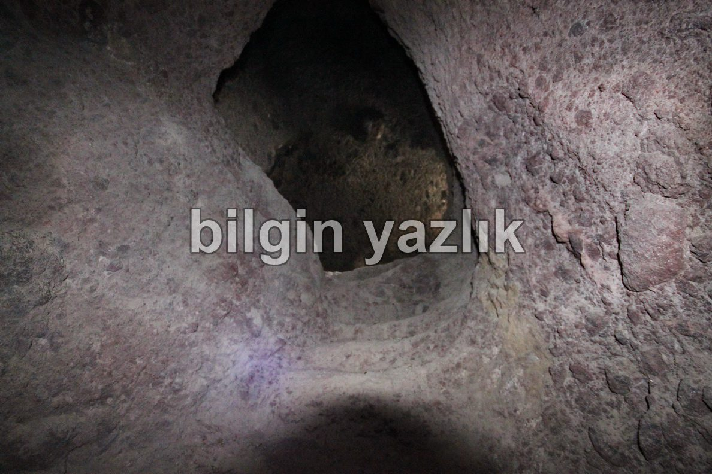
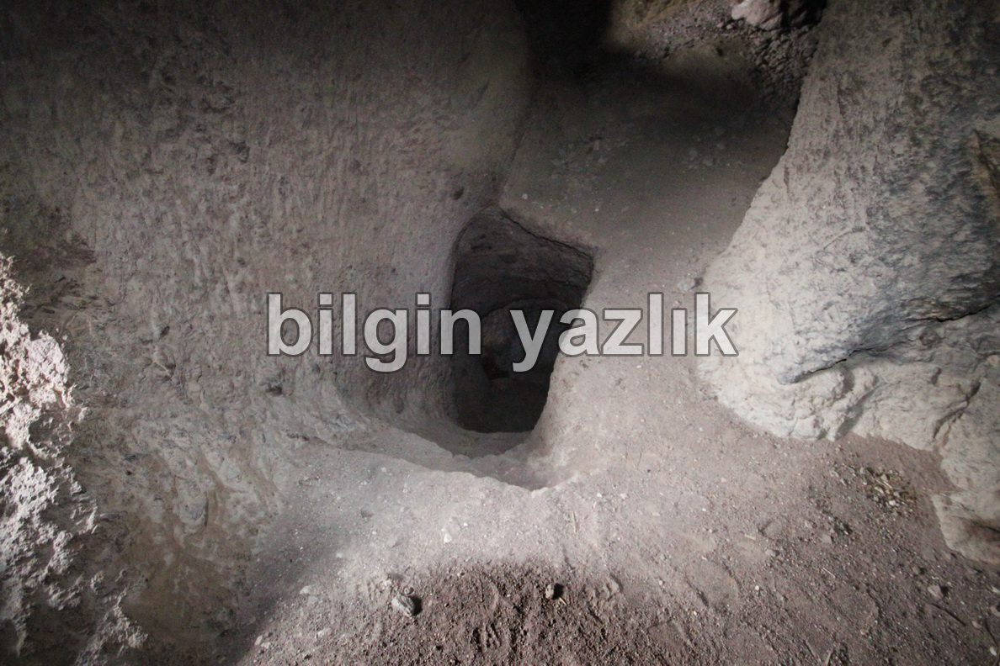
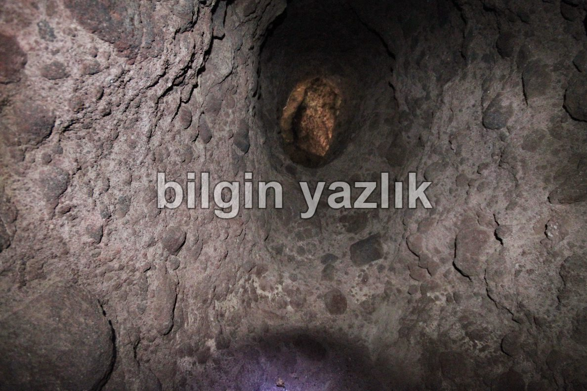
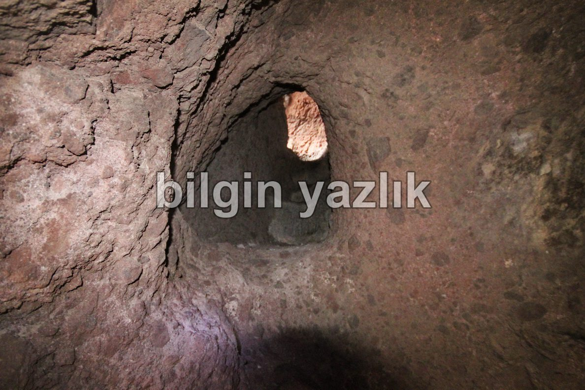
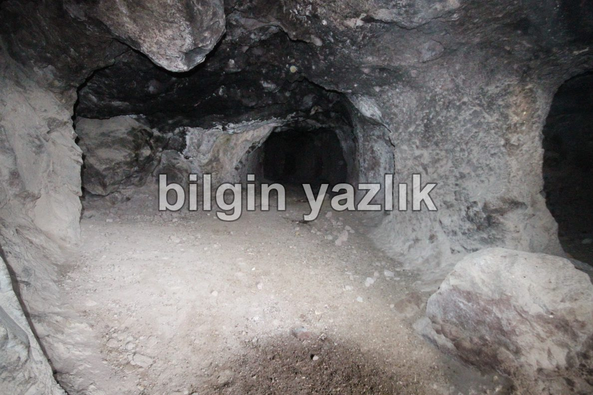
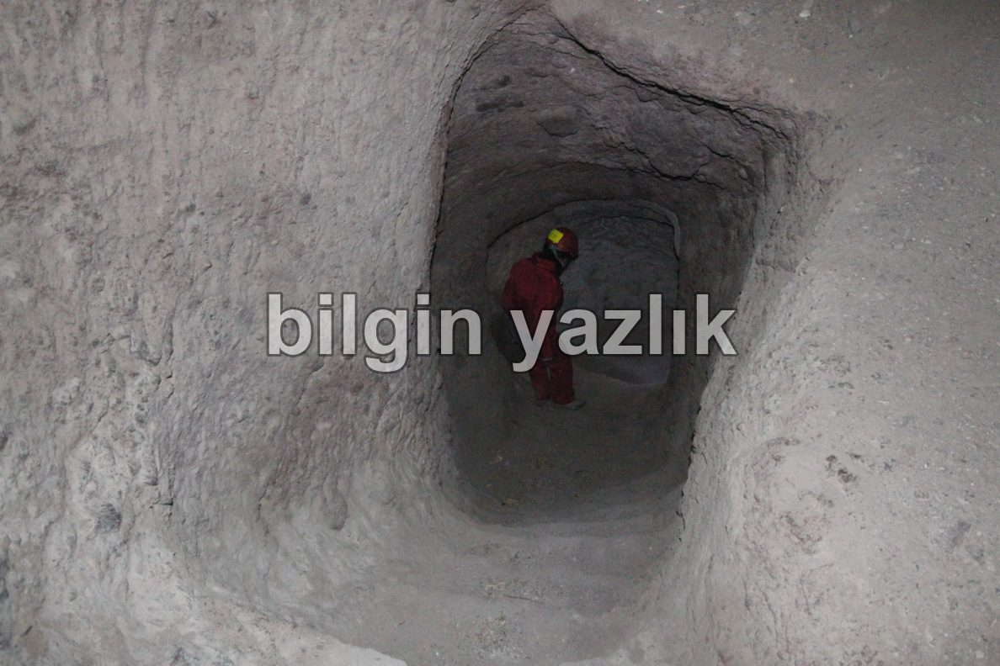
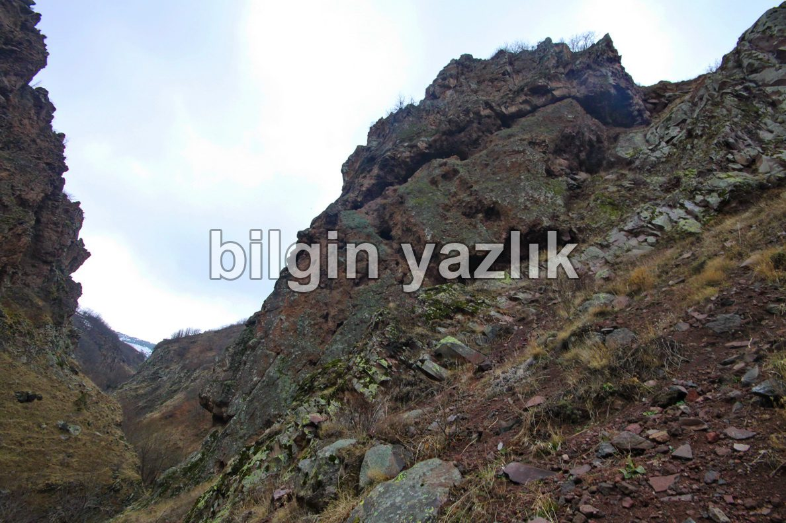
Bu yazı taliyol arşivinden taşınmıştır. · özgün kayıt